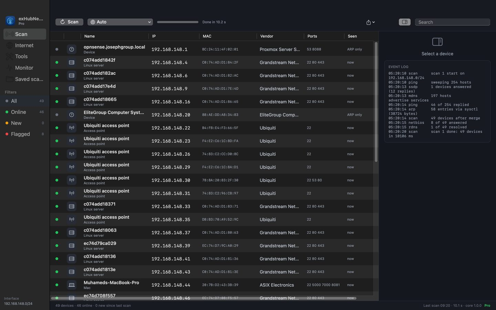
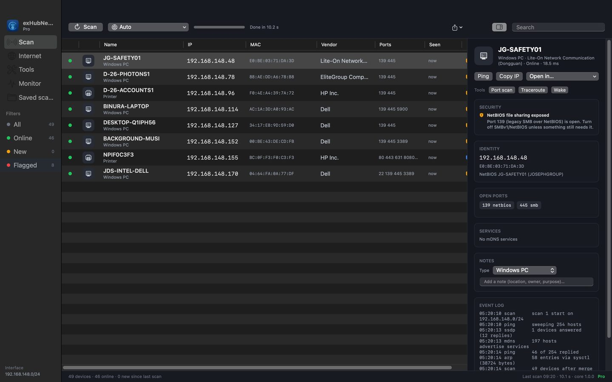

Everything on your network, named.
One click scans your subnet with ping, ARP, Bonjour, SSDP and NetBIOS and tells you what each device is — vendor, hostname, open ports, and a flag when something is exposed.
Lite is free. Pro is $15.99 / year. macOS 14+ (Apple silicon & Intel) · Windows 11.

What it does
Identify every device
Router, Mac, PC, phone, TV, camera, printer, NAS, IoT — from the MAC vendor, Bonjour services, NetBIOS names and open ports.
Security flags
Telnet, FTP, SMB/NetBIOS, RDP, VNC, cameras on the web, router admin pages and database ports are called out with what to do about them.
Tools
Ping, DNS lookup, port scanner with profiles, traceroute with per-hop latency, Wake-on-LAN.
Open in…
Jump to a device with the app you already use: Remote Desktop, VNC, SSH, SMB, its web UI, TeamViewer, AnyDesk.
Monitor & history
Rescan on a schedule, get notified when something appears, disappears or opens a port; save scans and diff them later.
Internet page
Gateway, DNS, public IP and ISP, Wi‑Fi link details, and a speed test you can save or copy as an image.

Know what to fix
Select a device and the inspector shows its identity, open ports with service names, Bonjour services, and a plain-English security note — plus your own name, type and notes, remembered by MAC address.
Lite and Pro
- First 10 devices of every scan
- Ping and DNS lookup
- Internet page and speed test
- Every device on the subnet
- All tools, Open in… launchers
- Monitor with alerts and notifications
- Saved scans with history and diff
Yearly subscription on the Mac App Store and the Microsoft Store, cancel any time.
Private by design
Everything runs on your computer. Nothing about your network is sent anywhere; the only internet traffic is the speed test and public-IP lookup you start yourself. No account, no analytics. Read the privacy policy.